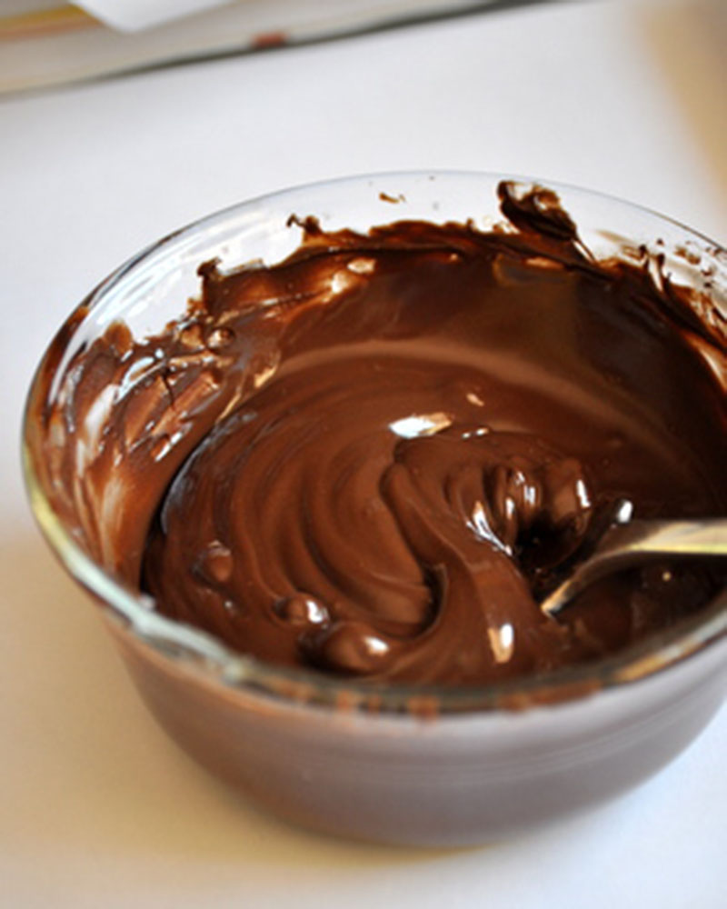
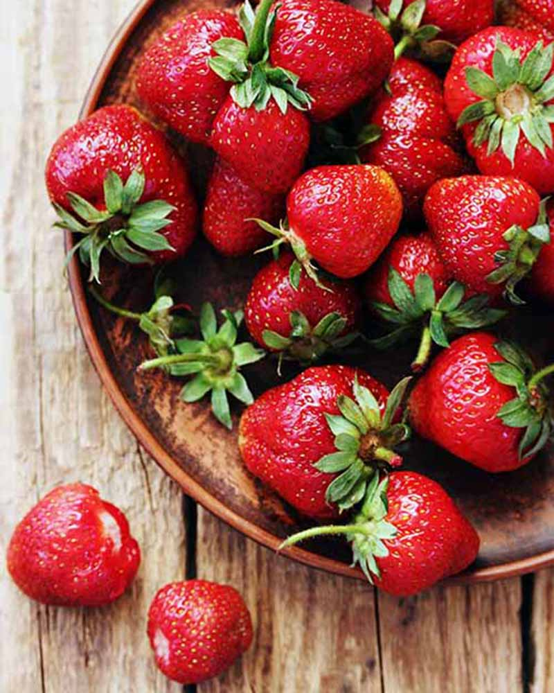
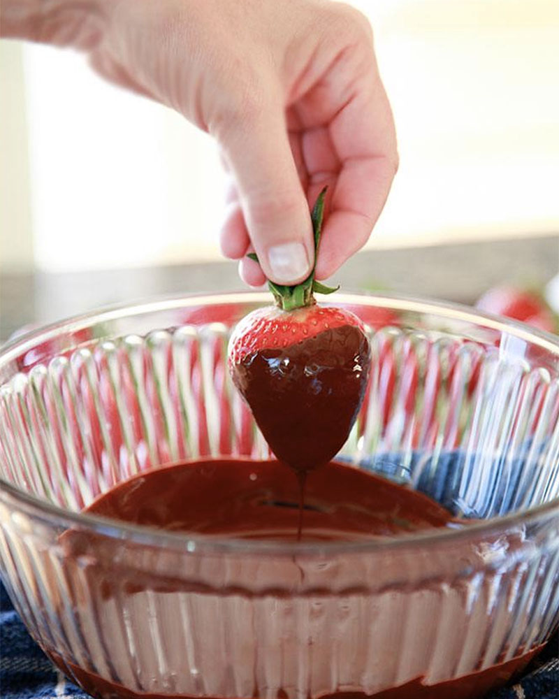
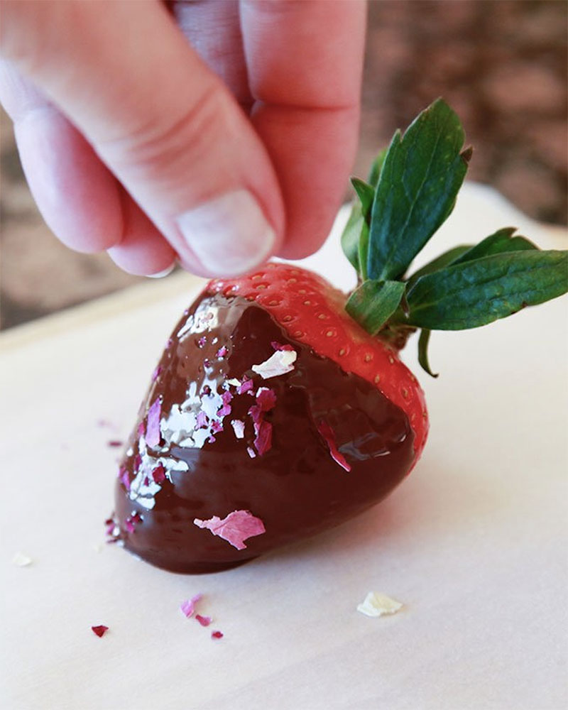
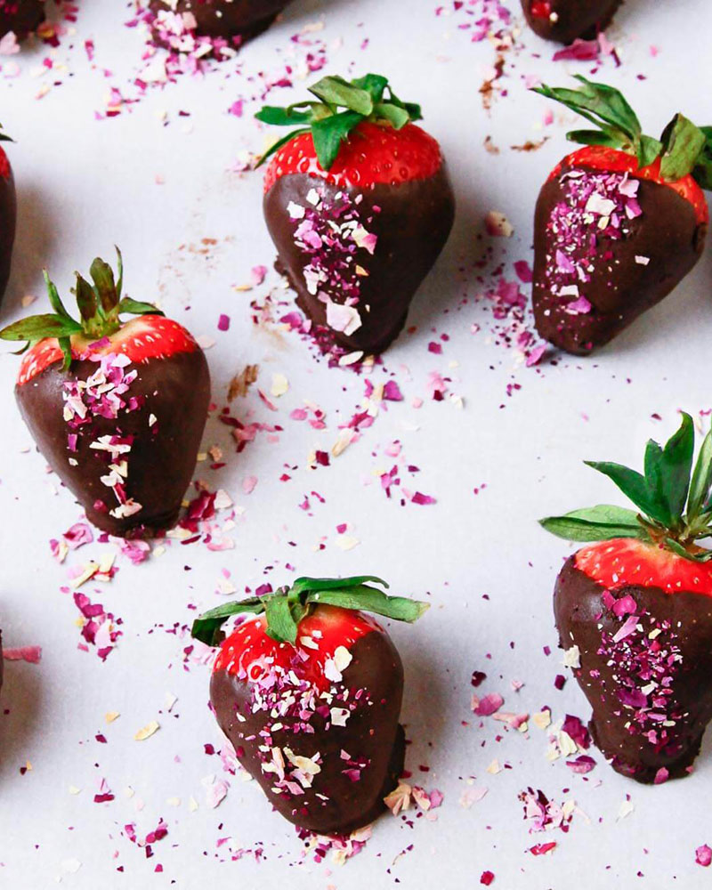

Elyse Waterman
Dark Chocolate Covered Strawberries
About the Recipe
With holiday season quickly approaching, dark chocolate covered strawberries are the perfect dessert for friends and family alike.
If you're trying to stay healthy throughout Thanksgiving, Christmas and into the new year - make these amazing treats! After all,
Dark chocolate is loaded with nutrients that can positively affect your health. Made from the seed of the cocoa tree, it is one
of the best sources of antioxidants on the planet. Studies show that dark chocolate can improve your health and lower the risk
of heart disease. Chocolate-covered strawberries are always a crowd pleaser and are loaded with antioxidants and vitamins.
However, like everything, dark chocolate is best consumed in moderation.
Nutritional Information
A 100-gram bar of dark chocolate with 70 to 85 percent cocoa contains:
- 11 grams of fiber
- 67 percent of the RDI for iron
- 58 percent of the RDI for magnesium
- 89 percent of the RDI for copper
- 98 percent of the RDI for manganese
- It also has plenty of potassium, phosphorus, zinc and selenium
Nutritional Information for This Recipe
- Calories: 87
- Fat: 6 g
- Saturated Fat 2g
- Protein 2g
- Carbohydrate 8g
- Fiber 2g
- Cholesterol 1mg
- Iron 1mg
- Sodium 26mg
- Calcium 15mg
What You'll Need
| Prep Time | Cook Time | Yield |
|---|---|---|
| 20 mins | 10 mins | 12 strawberries (serving size: 1 strawberry) |
- 4 ounces dark chocolate (60 percent to 70 percent), finely chopped
- 12 large strawberries, preferably long-stemmed
- 1/2 cup lightly salted roasted pistachios, finely chopped (optional)
How To Make Them
- Line a baking sheet with foil. Place chocolate in a heatproof bowl set over a pan of simmering water. (Do not let water boil or bowl touch water.)
- Cook, stirring occasionally, until chocolate has melted. 
- Carefully remove bowl and let chocolate cool for 5 minutes.
- Wash your strawberries
- Place your favorite toppings like sprinkles or pistachios in a small bowl.
- One at a time, hold a strawberry by stem and dip into chocolate, coating about two-thirds; allow excess to drip off.Immediately dip into your small bowl of toppings 
- Set strawberries in 1 layer on prepared baking sheet. Refrigerate until chocolate is firm, about 10 minutes.
- Store in the refrigerator for up to 2 days and enjoy!